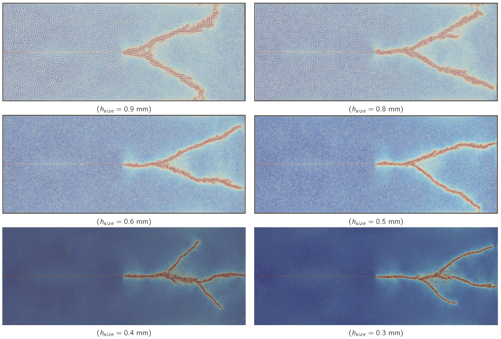
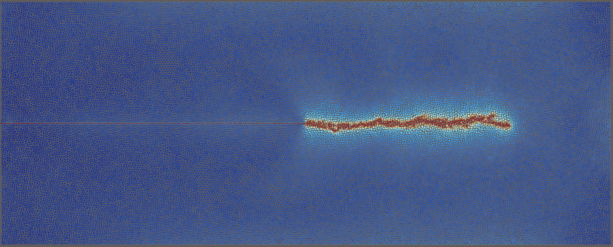
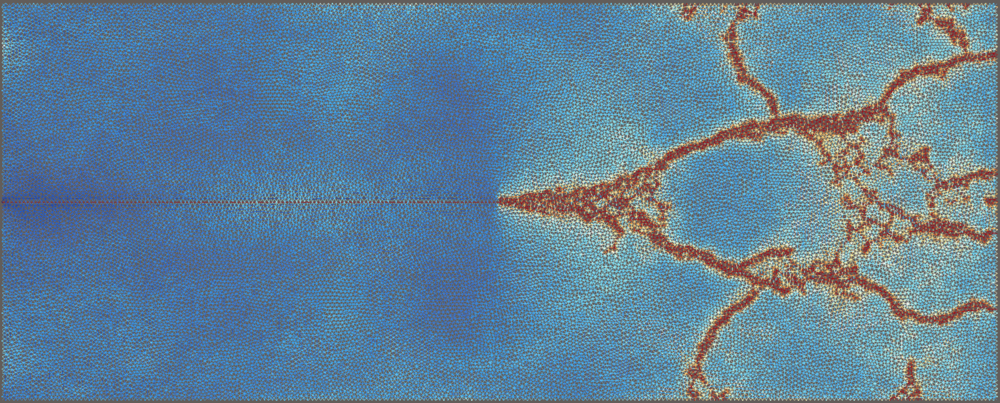

Project Overview & Motivation
The primary goal of this semester project was to extend an existing quasi-static Cohesive Zone Model (CZM) to a fully dynamic setting within the FEniCSx finite element framework.
By accounting for high-speed crack phenomena—such as dynamic branching and stress wave propagation—this model was developed to serve as a baseline numerical tool capable of validating and benchmarking novel phase-field fracture models currently under research at the ETH Computational Mechanics Group.
Theoretical Framework & Implementation
- Elastodynamics: Expanded the standard variational formulation to include inertial terms alongside elasticity, allowing the balance equation for linear momentum to capture transient stress waves.
- Cohesive Zone Model: Implemented a model where displacements are not continuous. Elements resist separation via cohesive traction forces up to a critical opening, with a damage parameter tracking irreversible separation.
- Discretization & Integration: Displacement fields were defined in a Discontinuous Galerkin (DG) space. A Newmark-beta method was utilized for time integration to ensure stability during high-speed transients, while a nested fixed-point iteration loop coupled the displacement and damage fields at each time step.
Benchmark Simulation Setup
Key Findings: The Convergence Problem
A comprehensive study was conducted to evaluate mesh sizes ranging from 1.5mm down to 0.3mm. In standard structural analysis, finer meshes yield stabilized and highly accurate results. However, because dynamic CZM forces cracks along element interfaces, significant mesh dependency was uncovered.
Refining the mesh artificially increased the interface energy and induced uncontrollable multi-branching. The model failed to converge on a single stable crack pattern, and altering the mesh algorithmically while keeping parameters identical yielded entirely different fracture paths.

Figure 1: Comparison of crack branching patterns across different mesh refinement levels.
Influence of Load Magnitude
Simulations compared a baseline traction of 2 MPa against a half-load (1 MPa) and double-load (4 MPa) to observe dynamic effects:
- 1 MPa: Resulted in slow crack propagation with zero branching.
- 2 MPa: Exhibited standard propagation with definitive primary branches.
- 4 MPa: Extreme crack velocity caused immense stress wave reflection. These reflected waves superimposed, creating secondary, high-stress fracture zones far removed from the primary crack tip.

Load = 1MPa

Load = 4MPa
Conclusions
While the Dynamic Cohesive Zone Model effectively captures fracture energy and tracks dynamic wave propagation, it exhibits severe mesh dependency. The study concluded that making stable, reliable predictions of specific branching paths is nearly impossible using this method without integrating advanced phase-field adaptations to regularize the fracture topologies.